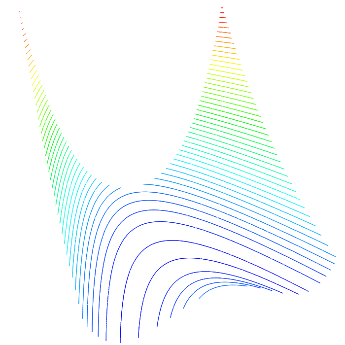
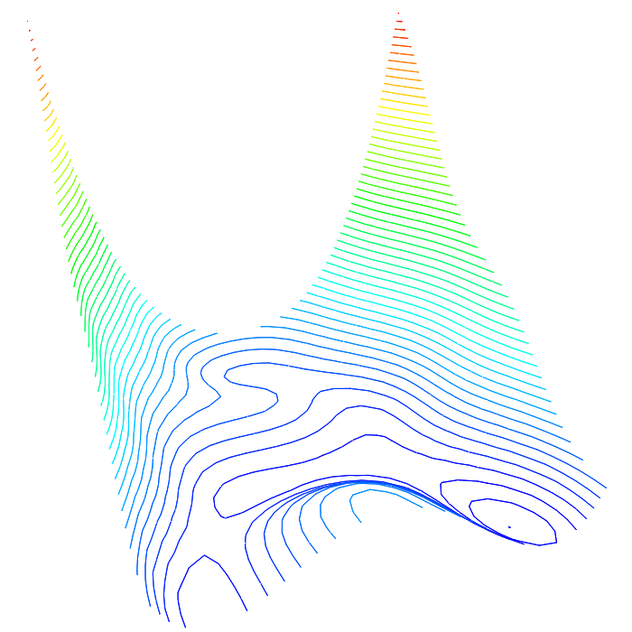

I am a Homo sapien who loves to play chess, longboard, and code.
I decided to create this webpage to showcase my personal projects.
I hope to explain projects and why I decided to
do them. They have tickled my interests and taught me
so much about computer science, mathematics, and physics. Perhaps
they can interest you to explore these topics as they did for me. :)


Bayesian Optimization
and Search-based Optimization
are two broad families of algorithms that try to find the global
optima of a function with the goal of minimizing the number of
function evaluations without requiring its derivative. A large body
of existing work deals with the single-fidelity setting, where
function evaluations are exact but may be expensive.
Multi-fidelity
evalution takes advantage of the fact that we may have access to
low-fidelity functions that approximate our objective function and
are much cheaper to evalute. Multi-fidelity Hybrid (MF-Hybrid)
combines the best attributes of both families of algorithms and
outperfomrs existing single-fidelity and multi-fidelity optimization
algorithms. Black-box global optimization has applications in
Machine Learning, Physics, Engineering, and much more. My report
was selected as the best two-page student abstract in
AAAI-18
where I won first place in a
Three Minute Thesis
student abstract presentation competition.


In computer graphics, fluid is used to describe systems like fire, smoke, and dust.
It is notoriously hard to simulate fluid in real-time, so particle systems are usually used
to approximate them. However, non-particle based fluid simulations can make fluid
effects more realistic and visually interesting. I created a real-time fluid simulation
using fast algorithms based on the
Navier-Stokes equations
accelerated by the GPU with
OpenCL.
From this project I have learned about fluid dynamics, the architecture of the GPU,
how to manage memory efficiently with OpenCL, and the interoperability between OpenGL and OpenCL.

For a given set of points, called sites, a
Voronoi diagram
is usually defined to be a partition of regions on the plane such
that the set of all points within each region
are closer to their corresponding site than any other site. Its dual, the
Delaunay triangulation,
has no sites inside the circumcircle of any triangle.
Both of these are very useful for nearest neighbor queries and generating
nice triangulations, respectively. There is no reason they must be restriced to the plane
and so my program constructs Voronoi diagrams from a set of sites on the unit sphere.
Since speed was a major concern, I designed a multithreaded implementation of
Fortune's algorithm
to generate a Voronoi diagram from thousands of sites in a fraction of a second.

The Rubik's cube is a fascinating puzzle that has entertained me
for much of my life. Finding optimal solutions
(20 moves or fewer)
can consume a large amount of time and memory due to its enormous
search space of 43,252,003,274,489,856,000
cube states for the 3x3x3. I used
Thistlethwaite's algorithm
to solve arbitrary cubes using about 35 moves in about 15 milliseconds with
43 MB of pregenerated table data. I used OpenGL for rendering and SDL
for window and event management. This project is an interesting
application for group theory, combinatorics, and graph traversal algorithms.